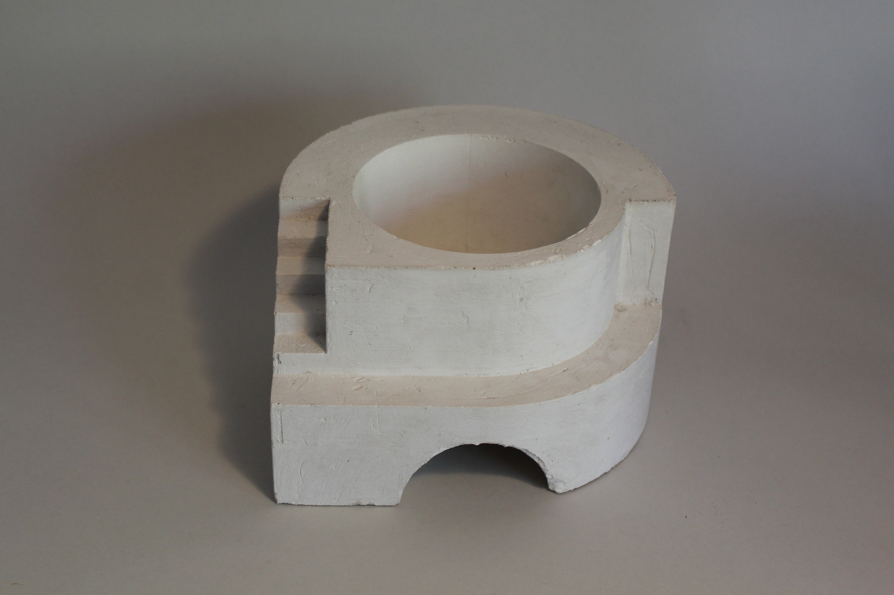

← Volver a proyectos


Maceta de yeso
Moldaje · Fabricación digital · 2024Este proyecto es el resultado de mi ramo de Fabricación Digital, en el que desarrollé una maceta a partir de moldes impresos en 3D, previamente modelados en Rhino.
Arrastra el modelo para girarlo y haz clic para pausarlo.
